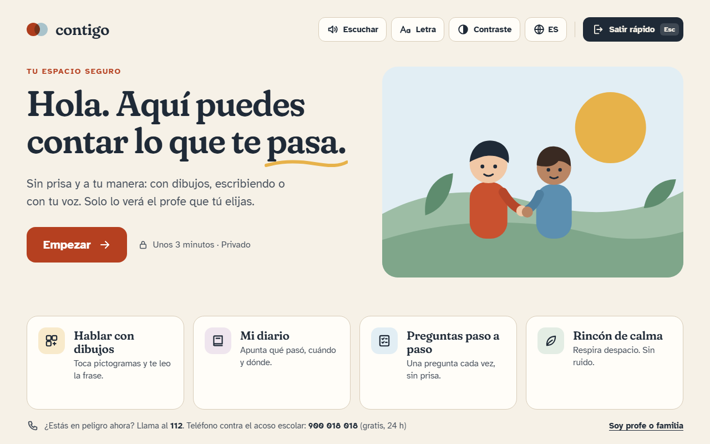
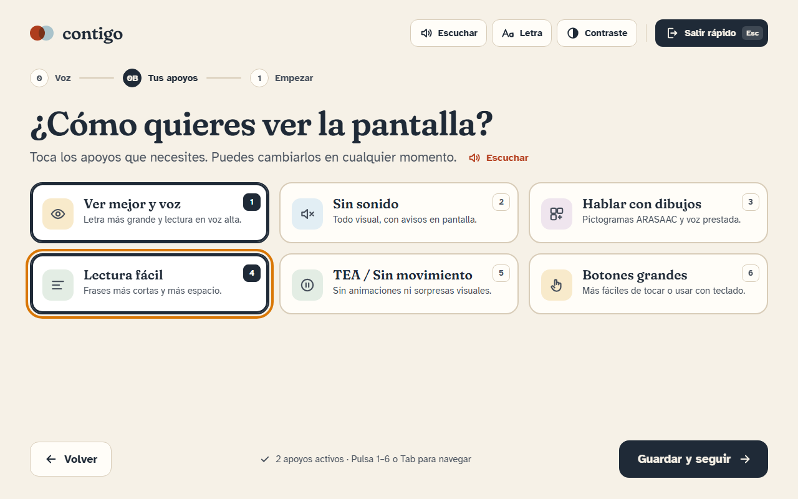
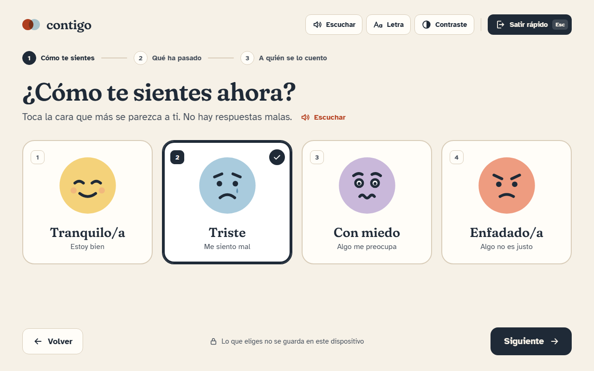
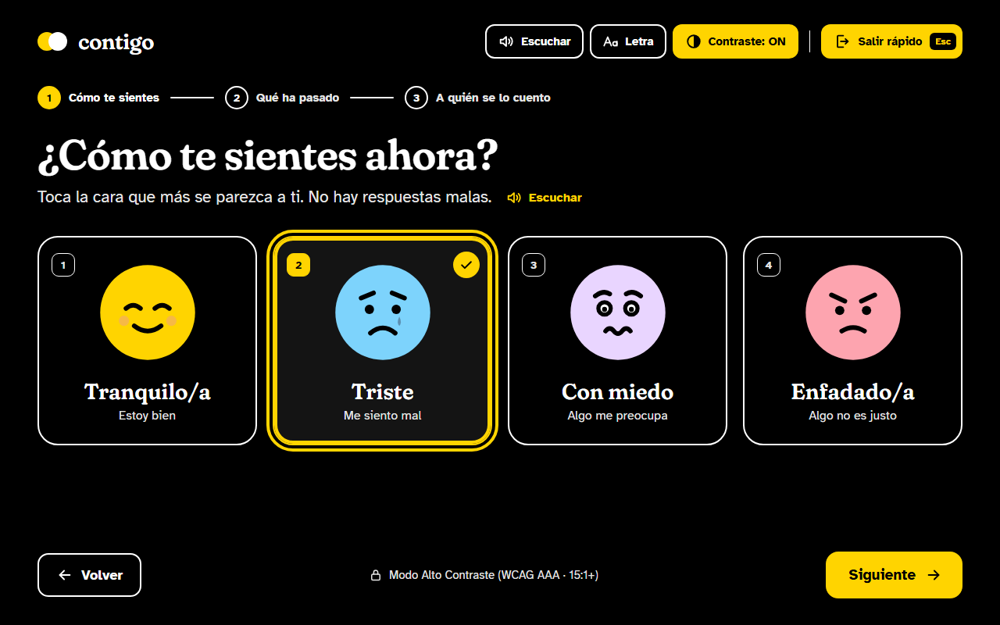
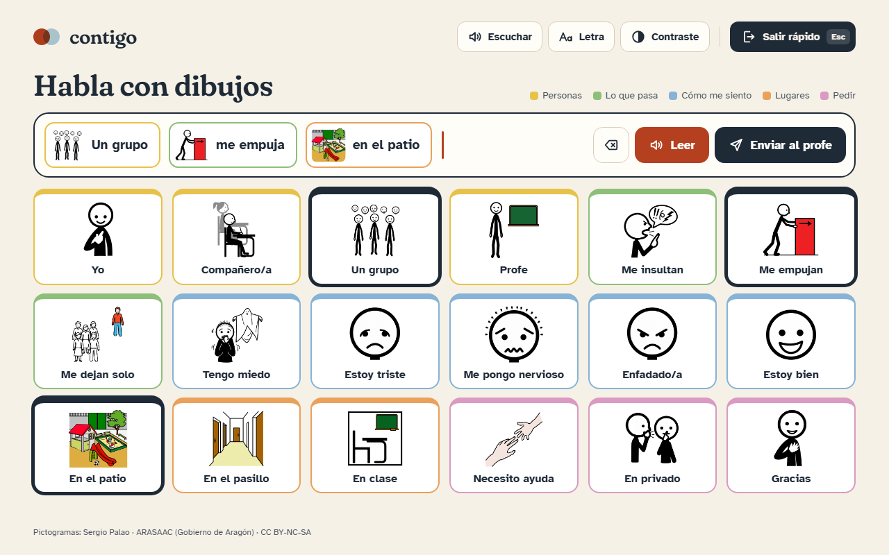
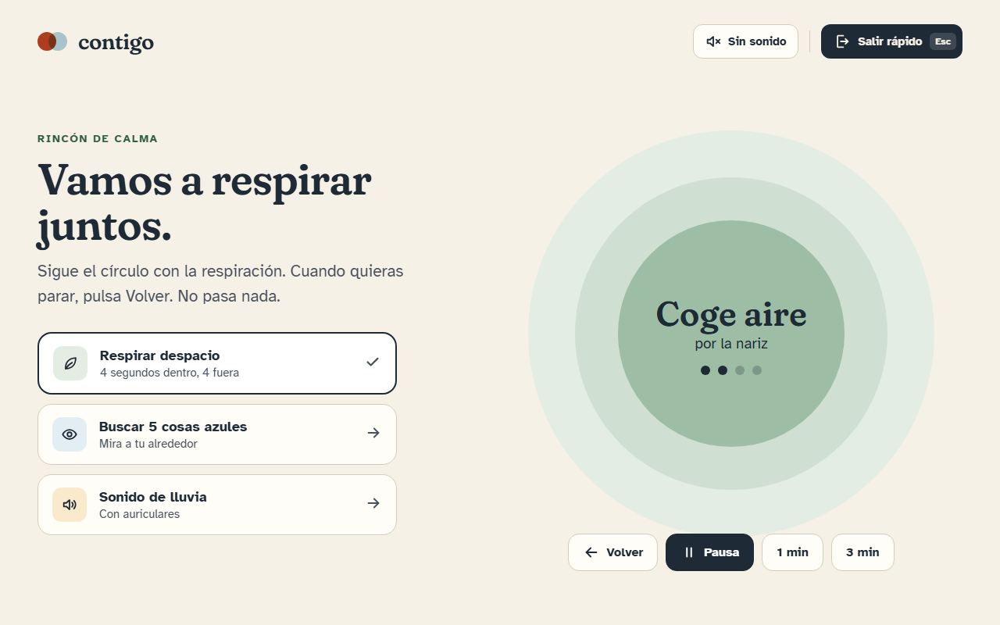

Cuaderno
Papel cálido, tipografía Atkinson Hyperlegible + Fraunces, ilustración editorial y tarjetas limpias. Cercana sin ser infantilizada.

1. Inicio
2. Apoyos (0B)
3. Sentimientos
4. Alto contraste AAA
5. Pictogramas CAA
6. Rincón de calma